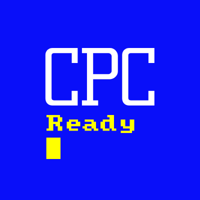

CPCReady es un conjunto de herramientas que ayudan y facilitan el desarrollo en lenguaje de programación Basic para Amstrad CPC desde PC's modernos. El core de CPCReady esta desarrollado en Python =>3.6 Incluye herramientas externas que facilitan la ejecucion de tareas. Es una aplicación multiplataforma para sistemas operativos Windows, Linux y mac, y se utiliza desde la linea de comando.
Caracteristicas
Algunas de las caracteristicas incluidas en CPCReady son:
- Creación de proyectos.
- Programación en Basic por objetos (scripts independientes).
- Generacion de imagenes DSK y CDT de tu proyecto.
- Creación de Pantallas de carga y sprites.
- test y pruebas sobre RetrovirtualMachine Desktop y Web.
- Integración con 8BP y ugBASIC.
- Y mucho mas....
Herramientas
Las herramientas externas utilizadas son:
- iDSK : Para la creación de imagenes de disco
- 2CDT : Para la creación de imagenes de cinta
- RetroVirtualMachine : Para testear tus proyectos. Tanto con version Web, como desktop.
- ugBasic : Para programar en este lenguaje ademas del Locomotive Basic de toda la vida.
- Visual Studio Code : Como IDE de desarrollo + Extensiones que te ayudaran a programar.
- Martine : Para la creación de sprites y pantallas de carga.
- z88dk: Como compilador para ugbasic.
Próximas Mejoras
Las siguientes mejoras a realizar en la aplicación son
| Mejora | Fecha | Incluido en Version |
|---|---|---|
| Soporte para archivos de cassette CDT | --- | --- |
| Pruebas de desarrollo sobre M4 Board | --- | --- |
| Programacion en ugBasic | --- | --- |
Contacto
»